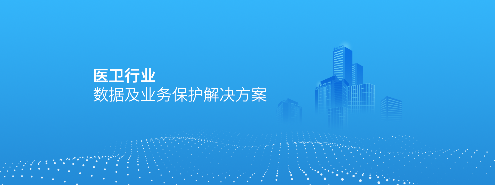
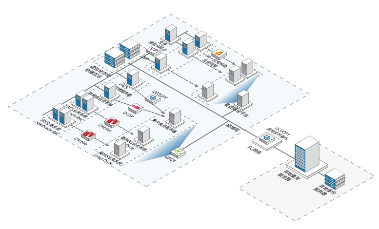
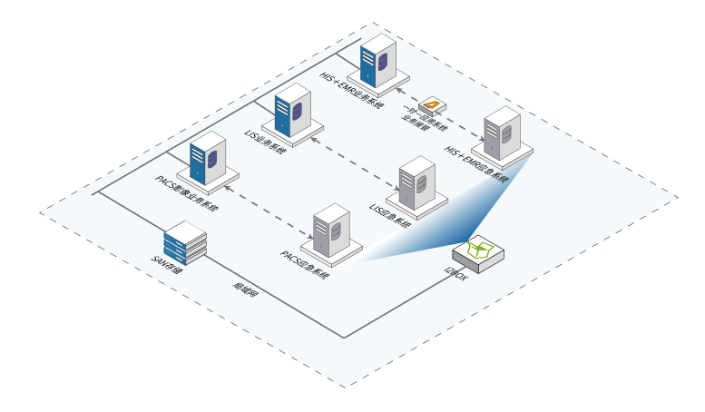

三大优势
多层级的灾备能力
单服务器的数据备份、集群部署的灾备 保护、重要系统的异地备份、重要系统的应用容灾、数据中心的整体容灾、都可以针对性的提供相应的解决方案。
多层级的灾备能力
单服务器的数据备份、集群部署的灾备 保护、重要系统的异地备份、重要系统的应用容灾、数据中心的整体容灾、都可以针对性的提供相应的解决方案。
多层级的灾备能力
单服务器的数据备份、集群部署的灾备 保护、重要系统的异地备份、重要系统的应用容灾、数据中心的整体容灾、都可以针对性的提供相应的解决方案。
异构存储的灾备
1、用户无需针对不同存储介质构建多个灾备体系;
2、无关系统、应用和硬件，可在同一个灾备管理平台对各类资源数据进行灾备管理。
NAS海量数据的灾备
1、现有业务的体系架构无需调整，事件触发式通知，备份响应速度快;
2、旁路模式对现有业务系统无多余资源开销，备端数据可随时查看。
非结构化数据的灾备
1、支持数据的完整性校验，保证同步到云端的数据于本地是完整一致的;
2、目录结构的一致性，同步过程中严格将文档的目录层级完整继承到云端。
3、添加同步主机，主动向本地存储发动访问请求，对原来的业务生产系统唔任何影响
异地容灾
1、构建数据和应用两个层级的异地容灾保护;
2、提高业务连续性，从而降低因各类因素导致的数据丢失和业务中断带来的损失。
黑客攻击和勒索病毒
1、避免因为认为误删除或外部黑客攻击导致的数据感染或丢失导致的业务中断不可用;
2、根据需求将数据快速回复到之前的任意时间点，细粒度到百万分之一秒。

三甲医院异地容灾架构
本架构能够解决
医院三级评审 数据异地保护 应用异地接管 数据库双活
主要产品:
i2COOPY i2CDP i2Availability i2Box i2VP i2Active
典型案例:
辽宁省人民医院、保定市第三中心医院

三甲医院异地容灾架构
本架构能够解决
等级保护 数据保护 应用本地接管
主要产品:
i2COOPY i2CDP i2Availability i2Box
典型案例:
上海嘉会国际医院、广州市中医院